Illusion of Abyss
Main Quest
| Requirements | |
|---|---|
| Base Level: | 150 |
| Starting Point: | alberta 226/28 |
| Rewards | |
| Experience: | 90,000,000 (Base) and 60,000,000 (Job) |
| Items: | 5  Illusion Stones Illusion Stones
|
- Speak with Knight Aylvar (
alberta 226/28) to start the quest by using the Warper > Illusion Dungeons > Illusion of Abyss. His friend is missing and he wants you to examine a Piece of Turtle Shell. - Once inside the dungeon, speak with the Girl right next to you (
tur_d03_i 139/186) and choose All right, I'll go. I'll ask a few questions. She tells you 4 locations to investigate. - Speak with the Impatient Man on the left side, near (
tur_d03_i 80/180). - Speak with the Soldier on the right side, near (
tur_d03_i 235/187). - Head to the second floor of the dungeon, at the bottom right of the map.
- Talk with the Fragile Woman at the center of the map, near (
tur_d04_i 97/112). - Finally, speak with Archaeologist Leiphen at the top left of the second floor of the dungeon (
tur_d04_i 26/167). - He will ask the following from you:
- Hunt 10 Ominous Permeters.
- Hunt 10 Ominous Freezers.
- Hunt 10 Ominous Soliders.
- Hunt 10 Ominous Heaters.
- Gather 10 Rotten Meats.
- Once you've finished with his request, return and speak to him.
- Go back to Fragile Woman and speak with her.
- Speak with the Girl at the entrance of the dungeon. She's gathering her thoughts.
- Speak to her again. You learn her name is Narin.
- Speak to her for a third time. You will be rewarded with some experience and 5 Illusion Stones.
You have now unlocked all the daily quests for Illusion of Abyss. The first global quest cooldown has been removed on NovaRO.
Daily Quests
Remember not to Forget
| Requirements | |
|---|---|
| Base Level: | 150 |
| Starting Point: | tur_d03_i 139/186 |
| Rewards | |
| Experience: | 30,000,000 (Base) and 25,000,000 (Job) |
| Items: | 3 Illusion Stones
|
- Speak with the Girl and choose You asked me to do something to accept her request.
- Speak with Leiphen on the second floor of the dungeon, at the top left.
- Return to the Girl to get your reward.
Empty Desire
| Requirements | |
|---|---|
| Base Level: | 150 |
| Starting Point: | tur_d03_i 235/187 |
| Rewards | |
| Experience: | 30,000,000 (Base) and 25,000,000 (Job) |
| Items: | 3 Illusion Stones
|
- Speak with the Soldier and choose I'll take a look to accept his request.
- You will need to gather and hunt the following:
- 10 Ominous Assaulters
- 5 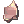 Old Metal Pieces (obtained from killing Ominous Assaulter)
- Return to Soldier to get your reward.
Endless Hunger
| Requirements | |
|---|---|
| Base Level: | 150 |
| Starting Point: | tur_d04_i 97/112 |
| Rewards | |
| Experience: | 30,000,000 (Base) and 25,000,000 (Job) |
| Items: | 3 Illusion Stones
|
- Speak with the Fragile Woman and choose I'll be back to accept her request.
- You will need to gather and hunt the following:
- 10 Ominous Permeters
- 10 Ominous Freezers
- 10 Ominous Soliders
- 10 Ominous Heaters
- 10 Rotten Meat
- Return to the Fragile Woman to get your reward.
Daily Quest Reset
As an exclusive feature to NovaRO, you are able to reset all your daily quests cooldowns.
That means you are able to farm Illusion Stones as much as you want on a single character, without having to create additional characters to bypass the cooldown.
To do so, talk to Osmundi. He can be found inside one of the following locations:
- Illusion of Moonlight dungeon .
- Illusion of Vampire dungeon .
- Illusion of Frozen dungeon .
- Illusion of Abyss dungeon .
- Illusion of Teddy Bear dungeon .
- Illusion of Luanda dungeon .
- Illusion of Twins dungeon .
- Illusion of Labyrinth dungeon .
- Illusion of Underwater dungeon .
They are separated in 5 distinct difficulty groups. Each reset will award you with a set amount of:
- Tier 1: Illusion of Moonlight and Illusion of Frozen.
- Reset Reward:
 10 Illusion Stone and a choice between
10 Illusion Stone and a choice between  Moonlight Refine Box and
Moonlight Refine Box and  Frozen Refine Box
Frozen Refine Box
- Reset Reward:
- Tier 2: Illusion of Vampire and Illusion of Abyss
- Reset Reward: 12 Illusion Stone and a choice between
 Vampire Refine Box and
Vampire Refine Box and  Abyss Refine Box
Abyss Refine Box
- Reset Reward:
- Tier 3: Illusion of Teddy Bear and Illusion of Underwater - 1
- Reset Reward: 14 Illusion Stone and a choice between
 Teddy Bear Refine Box and
Teddy Bear Refine Box and  Underwater Refine Box
Underwater Refine Box
- Reset Reward:
- Tier 4: Illusion of Luanda and Illusion of Twins
- Reset Reward: 16 Illusion Stone and a choice between
 Luanda Refine Box and
Luanda Refine Box and  Twins Refine Box
Twins Refine Box
- Reset Reward:
- Tier 5: Illusion of Labyrinth and Illusion of Underwater - 2
- Reset Reward: 22 Illusion Stone and a choice between
 Labyrinth Refine Box and Underwater Refine Box
Labyrinth Refine Box and Underwater Refine Box
- Reset Reward:
The first reset of the day, for each group, will give a 12 Illusion Stone bonus.
Once you complete the dailies of one of the Tiers above, you can reset them. After a reset, these quests will not give any experience until their original 24 hours cooldown pass.
Each Tier can be completed and reset separately, but you cannot reset dailies from a single Illusion Dungeon without completing the others in their respective group.
MVP Spawn
To spawn the Ominous Turtle General MVP, you have to kill 1000 mobs in the second dungeon floor. There will then be an announce on the map when he appears.
Illusion Gears
Speak with Equipment Researcher (alberta 225/28) right outside the entrance of the Illusion of Abyss dungeon.
You need to equip the base item to be able to craft its Illusion counterpart.
More information about these Illusion Enchants can be found in this page.
| Image | Name | Description | Crafting |
|---|---|---|---|
| 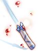 | Illusion Immaterial Sword [2] |
Unbreakable (except in upgrade attempts). MATK + 100.
Attack: 180 Property: Ghost Weight: 90 Weapon Level: 4 Required Level: 120 Usable Jobs : Swordsman classes, Thief classes, Merchant classes. |
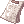 6 Logbooks |
| 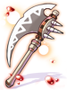 | Illusion War Axe [2] |
STR + 2, DEX + 2, LUK + 2. ATK + 40.
Attack: 180 Weight: 420 Weapon Level: 4 Required Level: 120 Usable Jobs: Merchant Classes. |
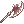 +7 War Axe [1]
|
| 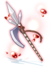 | Illusion Pole Axe [2] |
STR + 3, INT + 2, DEX + 2. ATK + 40.
Attack: 190 Weight: 150 Weapon Level: 4 Required Level: 120 Usable Jobs: Swordsman classes. |
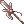 +7 Pole Axe [1]
|
| 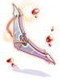 | Illusion Wing Shuriken [2] |
DEX + 2.
ATK + 50.
Attack: 300 Weight: 150 Weapon Level: 4 Required Level: 120 Usable Jobs: Ninja. |
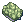 200 Old Turtle Shells |
| Illusion Iron Driver [2] |
Increases the damage of Increases attack speed by 10% (reduces after attack delay by 10%).
Attack: 210 Weight: 200 Weapon Level: 4 Required Level: 120 Usable Jobs: Archbishop. |
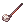 +7 Iron Driver
| |
| Illusion Fancy Flower [1] |
MATK + 1%.
Defense: 0 Location: Top Weight: 10 Required Level: 120 Usable Jobs: All |
+7 Fancy Flower |


 200
200 


Illusion Enchants
Illusion equipment can be enchanted. For details, see here.
Refine Box
Completing Daily Quest Reset rewards the player with a Refine Box that can upgrade (or sometimes downgrade) a +4 or higher illusion equipment from the matching dungeon to +7 ~ +10.
Defeating an illusion MVP rewards the MVP player (to be confirmed) by chance with a Special Refine Box that can upgrade (or sometimes downgrade) a +4 or higher illusion equipment from the matching dungeon to +9 ~ +12.
You can exchange 25 Refine Box of a single dungeon for 1 Special Refine Box of the same dungeon from Illusion Merchant NPC ().
Note that:
- The chance of getting each refine level is not uniform. For example, there is a significantly lower chance of getting +10 than getting +7 when using a regular Refine Box.
- An upgrade is not guaranteed. For example, using a Refine Box on a +9 illusion equipment may result in a downgrade to +7.
Monsters
| Image | Name | Level | HP | Size / Race / Element |
|---|---|---|---|---|
| 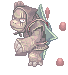 | Ominous Assaulter | 160 | 592,508 | Small / Demon / Wind 2 |
| 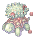 | Ominous Permeter | 157 | 508,355 | Small / Brute / Neutral 2 |
| 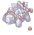 | Ominous Freezer | 159 | 549,071 | Small / Brute / Water 2 |
| 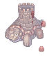 | Ominous Solider | 161 | 592,310 | Small / Brute / Earth 2 |
| 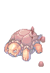 | Ominous Heater | 162 | 527,390 | Small / Brute / Fire 2 |
| 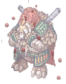 | Ominous Turtle General
|
165 | 11,628,549 | Large / Brute / Earth 2 |

Cards
| Card | Type | Effects |
|---|---|---|
| Weapon Card |
Increases critical damage by 10%. | |
| Headgear Card |
INT + 1, MaxSP + 80. MaxHP + 1% per 3 refine rate of armor. | |
| Shoes Card |
MaxHP + 10%, STR + 2. | |
| Armor Card |
MaxHP + 10%, DEF + 50. | |
| Accessory Card | CRIT + 3, increases critical damage by 5%.
CRIT + 2 | |
| Shield Card |
DEF + 30, MDEF + 5. Further reduces damage from all size monsters by 5%. |